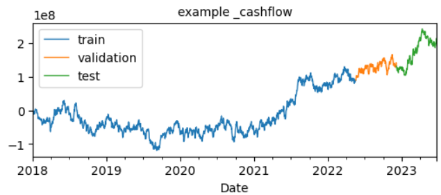
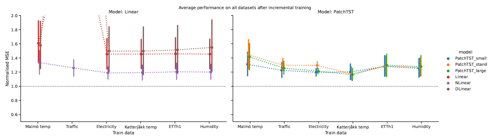
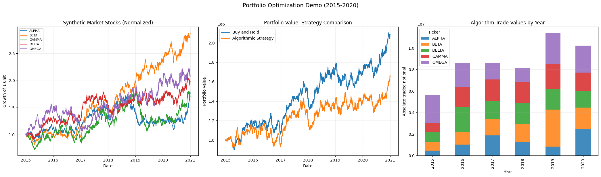
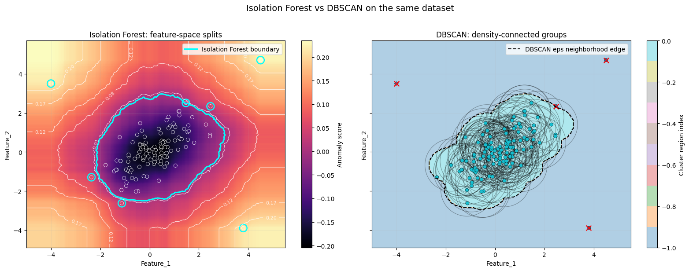

Cash flow prediction using stochastic autoregressive multivariate modeling
Forecasting the flow of cash in and out of a business is crucial for financial planning and risk management. The amount of cash also known as end-of-day balance, in technical terms, is a key indicator of a company's financial health, liquidity, and operational efficiency. Accurate cash flow forecasting enables businesses to make informed decisions about budgeting, investment, and resource allocation. This project focuses on forecasting short- and mid-term cash flow patterns by combining historical transaction data, seasonality effects, and business-cycle indicators. The goal is to provide reliable forward-looking estimates that support budgeting, liquidity planning, and operational decision-making.

Figure 1. Sample time series data for cash flow forecasting.
The project applies stochastic multivariate time series forecasting approaches from simple Linear, RIDGE and LASSO regressors to complex random forest-based models like XGB and LGB to model the complex interdependencies between different cash flow components, such as revenues, expenses, and end-of-day balance.
One key finding was that, contrary to our initial assumptions about stationarity and ergodicity, cash flow time series did not behave very differently from stock market time series. In particular, systemic effects were comparable to those observed in public markets, even in the presence of strong seasonal and cyclical patterns. This insight motivated us to evaluate more expressive modeling approaches, including random forest-based methods and deep learning architectures. We also built a comprehensive back-testing framework to assess model performance under realistic conditions, across multiple forecast horizons and market scenarios
Time series foundation models
This project investigates how foundation-model ideas can be transferred from NLP to forecasting. A core focus is tokenization for temporal data: instead of treating each timestamp as a token, we use patch-based representations (PatchTST) so the model can attend to richer local patterns with better computational efficiency. We compare PatchTST-style modeling with large pre-trained approaches such as TimesFM, and evaluate off-the-shelf versus fine-tuned performance across multiple domains.
The study emphasizes transferability to financial forecasting, where distribution shifts and abrupt events make long-horizon prediction difficult. The experimental pipeline includes architecture comparison, zero-shot evaluation, domain-specific fine-tuning, and sensitivity checks for training-data order.

Figure 2. Example time-series behavior used for model comparison and back-testing.
Time series forecasting for portfolio optimization
The goal of this project is to optimize investment portfolios by leveraging time series forecasting techniques. By predicting future asset prices and market trends, the project aims to enhance portfolio performance and manage risk more effectively.

Figure 3. Illustrative example showing portfolio optimization using PPO algorithm.
Focus of the project is to try to beat the buy-and-hold strategy as the common baseline approach leveraging deep reinforcement learning (DRL) methods. A wellknown algorithm called PPO, short for proximal policy optimization is used. PPO uses a clipped surrogate objective to balance exploration and exploitation between the action and the critic networks, ensuring stable and efficient policy updates.
Rogue Trader Identification using Isolation Forest
A rogue trader is an individual who makes unauthorized trades, often with the intent to deceive or defraud their employer. These traders can cause significant financial losses and damage to the reputation of financial institutions. The project applies the Isolation Forest algorithm, an unsupervised machine learning technique, to identify anomalous trading patterns that may indicate rogue trading behavior in foreign exchange (FX) transactions. By analyzing transaction data, the model aims to detect outliers that deviate from normal trading activities, allowing for early intervention and risk mitigation.

Figure 4. Example outlier detection behavior used for model comparison and back-testing.
Isolation Forest is considered an anomaly detection method in contrast to DBSCAN and K-means clustering which are clustering-based methods. Isolation Forest works by randomly selecting a feature and then randomly selecting a split value between the maximum and minimum values of the selected feature. This process is repeated recursively until all data points are isolated. The number of splits required to isolate a data point is used as an anomaly score, with higher scores indicating more anomalous behavior.
The project delivers a complete end-to-end anomaly detection workflow covering data preprocessing, feature engineering, model training, evaluation, deployment, and post hoc analysis to identify potential rogue traders and support further investigation and prevention strategies. To make the process reproducible and scalable, we implemented Kubeflow pipelines for data ingestion, feature extraction, Isolation Forest training, and performance evaluation, and deployed the solution on Google Cloud Platform using Kubeflow and Vertex AI to efficiently process large FX transaction volumes and handle the computational demands of training and serving the model.